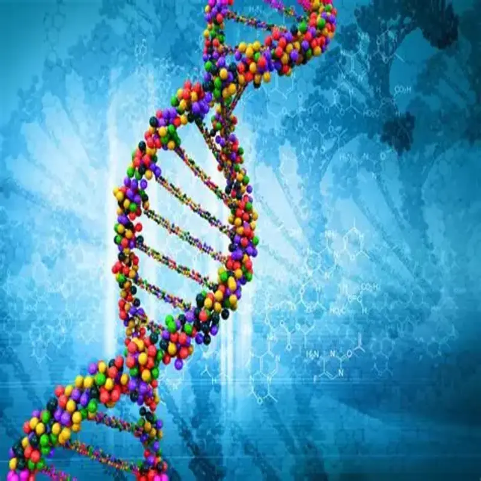

La genética es la rama de la biología que estudia la herencia y la forma en que las características de los organismos se transmiten de una generación a otra. Esta disciplina analiza cómo la información genética se almacena, se expresa y se transmite entre los seres vivos. Las características heredadas, como el color de los ojos, la altura o ciertos rasgos físicos, están determinadas por genes que se encuentran en el ADN. Estos genes contienen la información necesaria para que las células produzcan proteínas y realicen diversas funciones. El estudio de la genética también permite comprender cómo se originan las variaciones entre los individuos de una misma especie. Estas variaciones son importantes porque contribuyen a la diversidad biológica y permiten que las especies puedan adaptarse a diferentes ambientes. Actualmente, la genética tiene una gran importancia en áreas como la medicina, la biotecnología y la agricultura, ya que ayuda a comprender enfermedades hereditarias, mejorar cultivos y desarrollar nuevas tecnologías relacionadas con la vida.